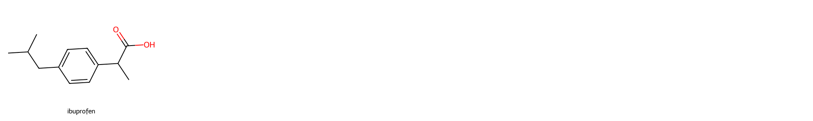

load_dotenv("../.env")
# os.environ['OPENROUTER_API_KEY'] = <your OpenRouter api key>TrueChat class central to this package.
The following line loads the OpenRouter api key from the .env file which is hidden from you. To use this notebook, either create a .env file containing OPENROUTER_API_KEY=your_api_key or uncomment the os.environ assignment below and set it to your personal api key.
show (string)
Chat (model)
Initialize self. See help(type(self)) for accurate signature.
Chat.save_conversation (generate_title=True)
chat("Give me the canonical SMILES string of ibuprofen. Output only the SMILES string and nothing else.")CC(C)Cc1ccc(C(C)C(=O)O)cc1
names = ["ibuprofen"]
smiles = [chat.context[-1]['content']]
Draw.MolsToGridImage(mols=[Chem.MolFromSmiles(x) for x in smiles],
molsPerRow=5, subImgSize=(400,300), legends=names)
[{'prompt_tokens': 21, 'completion_tokens': 20, 'total_tokens': 41},
{'prompt_tokens': 73, 'completion_tokens': 9, 'total_tokens': 82}]Chat.print_conversation (user='Me')
Ibuprofen smiles string generation
Me: Give me the canonical SMILES string of ibuprofen. Output only the SMILES string and nothing else.
Gemini: CC(C)Cc1ccc(C(C)C(=O)O)cc1
print_conversation (conversation, user='User', assistant='Assistant')
file_path = chat.chatsdir + chat.time + "-" + chat.title + ".txt"
assistant = file_path.split("/")[-2].split("-")[0].capitalize()
with open(file_path, 'r') as f:
conv = f.read()
print_conversation(json.loads(conv), user="Me", assistant=assistant)Me: Give me the canonical SMILES string of ibuprofen. Output only the SMILES string and nothing else.
Gemini: CC(C)Cc1ccc(C(C)C(=O)O)cc1